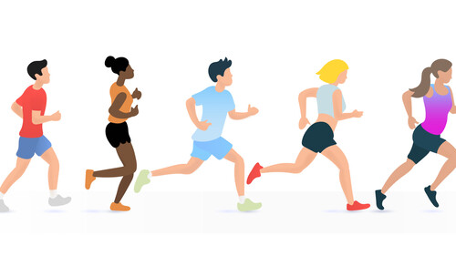
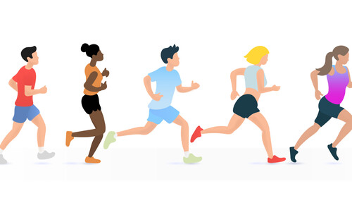
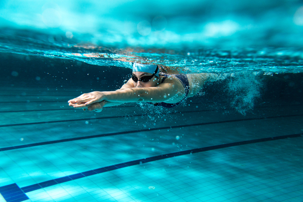
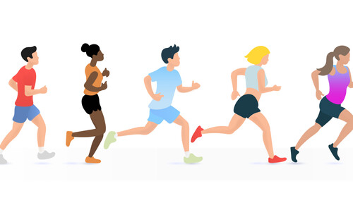
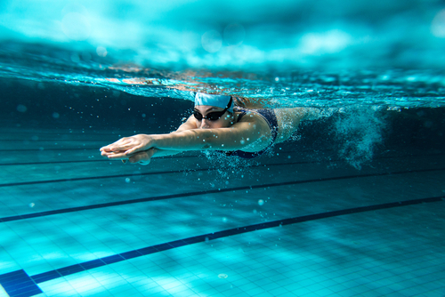

Collette Lowengrub
Hello! To start off, let me introduce myself. My name is Collette Lowengrub and I am a student athlete here at UC Riverside. Along with my love for the sport, I love all the things that UC Riverside has to offer; such as the amazing facilities, great training rooms, sports med, the people, and my coaches.I also love my sport for many many reasons. First of all, it brought me closer with all my teammates and created so many new friendships for me at this new school! Coming into freshman year was scary since i didn't know a lot of people. Luckily, this team showed me around campus, helped me find my classes, encouraged me when i was feeling down, and so much more. For me at the time, this was exactly what i needed. Now i couldnt be more happy that i chose to run cross country and track and field here at uc riverside because i love it more than anything. Being a student athlete is a lot of work but it is also super fun at the same time. There isn’t a lot of time outside sports and school but when we have time we like to do so many things! We get breakfast after runs, study together in study hall to make sure we all get our homework done on the time that it is due, and have many spaghetti dinners for the night before races. That is just to name a few of the things I’ve gotten lucky enough to experience in my two years here so far.
Not only do I pursure my interest of business adminisitration here at UCR, which is my current major, but i also compete D1 for both cross country and track! Being a student athlete has taught me many things, such as teamwork, how to be a team player, and also time management! There sometimes seems to be not enough hours in the day to get everything done that needs to be done, but I found a way to balance everything and make it work!
The number one lesson i've learned while balancing both sports and academics is time management, and not procrastinating anything until the last day, because this can cause many many issues. Something that has really helped me is just getting all my work done as soon as it is assigned to me, if possible. By doing this, it allows for me to still have time to go to sleep early, which is especially helpful considering i have practice at 6am every morning, but also to hangout with my friends as well! Cramming all your homework in one day, usually the day before its due, is no fun at all! Especially when you see all your friends hanging out without you. By incorporating time management skills, you have time to compete to your best ability since you are getting optimal rest, able to finish your work on time, and still have more time to hangout with friends of your choice! Best of every world!
Experience
Coach
• taught young children to swim
• helped their ability to float
• provided comfort in water
Influencer
• made videos on tiktok
• promoted brands
• reached out to people
• promoted quality products
Education
UC Riverside
Portfolio
 


